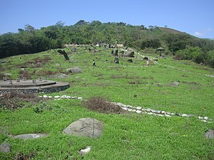
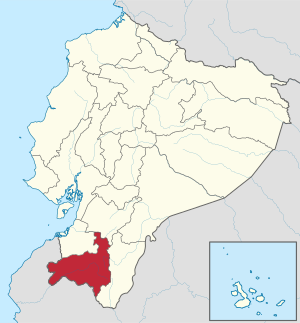

Provincia de Loja
| Loja | ||||
|---|---|---|---|---|
| Provincia | ||||
|
 Los monolitos de Quilluzara.
| ||||
| ||||
| Otros nombres: La centinela del sur | ||||
| Lema: Camino al progreso | ||||
| Himno: Himno de Loja | ||||
|
 Ubicación de la Provincia de Loja en Ecuador. | ||||
| Coordenadas | 4°03′S 79°39′O / -4.05, -79.65 | |||
| Capital | Loja | |||
| • Población | 170 280 | |||
| Idioma oficial | Español y quichua | |||
| Entidad | Provincia | |||
| • País |
| |||
| Prefecto Gobernador |
Rafael Dávila Egüez Mario Mancino | |||
| Subdivisiones |
mostrar
16 cantones
| |||
| Fundación | 25 de junio de 1824 (197 años) | |||
| Superficie | Puesto 9.º | |||
| • Total | 11 117 km² | |||
| Altitud | ||||
| • Máxima | 3788 m s. n. m. | |||
| • Mínima | 100 m s. n. m. | |||
| Clima | de 6 a 40° C | |||
| Población (2020) | Puesto 10.º | |||
| • Total | 521154 hab.[1] | |||
| • Densidad | 46,88 hab/km² | |||
| Gentilicio | lojano/a | |||
| PIB (nominal) | ||||
| • Total (2014) | USD 1 730 millones $ | |||
| • PIB per cápita | USD19 900 $ | |||
| IDH (2017) |
| |||
| Huso horario | ECT (UTC-5) | |||
| Código postal | EC11 | |||
| Prefijo telefónico | 07 | |||
| ISO 3166-2 | EC-L | |||
| Fiestas mayores | 18 de septiembre (Fiestas de Loja Federal) | |||
| Sitio web oficial | ||||
La provincia de Loja es una de las 24 provincias que conforman la República del Ecuador, situada en el sur del país, en la zona geográfica conocida como región interandina o sierra. Su capital administrativa es la ciudad de Loja, la cual además es su urbe más grande y poblada. Ocupa un territorio de unos 11 066 km², siendo la novena provincia del país por extensión. Limita con las provincia de El Oro al noroeste; con la provincia de Zamora Chinchipe al este; con la provincia del Azuay al norte; al sur con las provincias peruanas de Sullana y Ayabaca y al oeste con las provincias de Zarumilla y Tumbes, también pertenecientes al Perú.
En el territorio lojano habitan 511 184 personas, según el último censo nacional (2010), siendo la décima provincia más poblada del país. La Provincia de Loja está constituida por 16 cantones, de las cuales se derivan sus respectivas parroquias urbanas y rurales. Según el último ordenamiento territorial, la provincia de Loja pertenecerá a una región comprendida también por las provincias de El Oro y Zamora Chinchipe, aunque no esté oficialmente conformada, denominada Región Sur.
Es uno de los más importantes centros administrativos, económicos, financieros y comerciales del sur de Ecuador. El desarrollo de la industria en la provincia, en general se basó en las destrezas manuales de sus habitantes. Tiene una importancia muy singular para la historia del sur del Ecuador, por ser un punto medio entre la costa y la amazonía, desde tiempo ancestral se constituyó como una zona de encuentro entre culturas, comerciantes y eventos de connotación religiosa.
Tuvo distintos períodos migratorios provenientes de la serranía como los paltas y malacatos. Más adelante fue conquistada por los incas al mando de Túpac Yupanqui. La colonización española se dio cuando se levantó en 1546, la ciudad de Loja con el nombre de La Zarza, bajo orden del Gonzalo Pizarro; durante ese período la entidad máxima y precursora de la provincia sería la Corregimiento de Loja. Después de la guerra independentista y la anexión de Ecuador a la Gran Colombia, se crea la Provincia de Loja, una de las 7 primeras provincias del Ecuador.
En la parte alta de la provincia se pueden encontrar características propias de la región andina y en la parte baja se encuentran características propias de la Costa y el Perú; de los 16 cantones que conforman el territorio provincial 13 pertenecen al régimen Costa y 3 al régimen sierra.
Historia[editar]
Los primeros pobladores de Loja fueron nómadas, su actividad principal constituyó la caza, la pesca y la recolección de frutos, los primeros habitantes fijos se dieron en el periodo paleo indígena, en esta fase se estima comenzó a cultivarse el maíz, antes de la conquista de los incas dominaron la región de Loja los Paltas, una confederación de tribus muy afines en cuanto a idioma y organización social que abarcaba a los siguientes grupos étnicos (Garrochambas, Malacatus, Ambocas, Chaparras, Calvas, quienes tenían como límites de ocupación territorial, por el norte a Saraguro, por el oeste Zaruma, por el sur el río Calvas y al este la cordillera de Sabanilla.
La conquista del Imperio Inca, realizada con innegable resistencia de los Paltas, duro pocos años hasta la llegada de los españoles apenas 50 años; la región fue un polo minero importante desde mediados del siglo XVI hasta bien entrado el siglo XVII. Eso lo demuestra la presencia notable de españoles y el establecimiento de los mismos en la zona. Loja se convirtió en aquel momento en el corredor imprescindible del comercio entre la Nueva Granada y el Virreinato del Perú, y en su seno circulaban enormes cantidades de dinero, por cuya razón tuvo carácter de capital regional poseedora de una Casa Real encargada de registrar la entrada a las minas, existe mucha abundancia de acarreto y harina, pan cocido, vino, conservas, jamones, perniles, carnes finas y mercaderías de Castilla, entre las que destacan alfombras y sedas finas, así como vajillas de plata y adornos. Los centros mineros de esta región generaban el mayor impulso económico, convirtiéndose en los principales centros de consumo tanto de los bienes importados como los que se producían en la región.
El auge minero y la ubicación estratégica de Loja para servir de nexo comercial entre Quito y Lima hicieron de ella una villa muy próspera y animada, dicha prosperidad económica trajo consigo una cantidad muy grande de nobles españoles y esclavos. Luego el boom de la cascarilla trajo consigo un nuevo periodo de prosperidad económica, generando ingresos hasta bien entrado el siglo XX.
La provincia de Loja por su especial ubicación geopolítica y su prematura perdida de importancia económica, ha quedado a la zaga del resto del país; su economía que otrora era de bonanza, se deprimió notablemente dejando que la inercia de los grupos dominantes locales pierdan de vista las posibilidades que esta presentaba para desarrollarse.
La estructura político-administrativa de la actual provincia de Loja, se inicia a partir del desmembramiento de Ecuador de la Gran Colombia. (Maldonado, Vivar y Vélez, 2005:21):
· El 23 de julio de 1824, el Senado y la Cámara de representantes de la República de Colombia, crean la provincia de Loja adscrita al departamento del Azuay, integrada por cuatro cantones: Loja, Zaruma, Cariamanga y Catacocha. Azuay, con Cuenca como su capital; Loja, con su capital la ciudad de Loja.
· El 29 de mayo de 1861, el gobierno de Ecuador decreta que la provincia de Loja conste de los cantones citados anteriormente más el cantón Jambelí, este último integrado por la parroquia de Santa Rosa, las Islas de Jambelí y los terrenos de la costa sur que pertenecen a la antigua Presidencia de Quito. El Art. 10 del Decreto en referencia se anota que el cantón Loja se compone de las parroquias de La Matriz, El Valle, San Sebastián, Chuquiribamba, San Pedro, Santiago, Saraguro, Gonzanamá, Malacatos, Vilcabamba, Chito, Zumba y las tribus y terrenos comprendidos en el gobierno de Jaén del Antiguo Reino de Quito. Esto significa que, en las décadas de los años sesenta del siglo XIX, la provincia de Loja abarca prácticamente toda la Región Sur del Ecuador, integrada por las actuales provincias de El Oro, Loja y Zamora-Chinchipe.
El 30 de agosto de 1869, se desmiembra del territorio de Loja el cantón Jambelí y se decreta el cambio de los nombres de los cantones Cariamanga por Calvas y Catacocha por Paltas. Y el 4 de abril de 1897, por resolución de la Asamblea Nacional, se separa el cantón Zaruma para integrarlo a la provincia de El Oro (creada en 1884), quedando la provincia conformada por tres cantones: Loja, Paltas y Calvas.[2] Divisiones administrativas posteriores en la era republicana definieron la actual constitución de 16 cantones.
A inicios del siglo XX la estructura económica gravitaba sobre la hacienda y el poder político lo ejercía el hacendado, el gobierno con la fuerza pública y el clero. Hacia la sexta y séptima década del siglo XX la estructura evoluciona hacia la disolución de la hacienda y la instalación del modo de producción capitalista.
Geografía[editar]
La provincia de Loja pertenece a dos grandes conjuntos geográficos del Ecuador: la cordillera andina y sus estribaciones costeras; en Loja la Cordillera Andina desciende en altitud formando parte de la Depresión de Huancabamba, que conforma una conexión biogeográfica entre los bosques secos y los desiertos de la costa del Pacífico con las partes húmedas de la Amazonía, así como una barrera biogeográfica entre los Andes Meridionales y los Andes centrales.
El relieve lojano es parte del volcanismo antiguo que se desprende desde el Nudo del Azuay hacia el Sur. En la provincia de Loja los Andes ecuatorianos forman un codo andino, lo cual ha dado lugar a la conformación de cinco hoyas en las que se sitúan un sinnúmero de valles, mesetas, cordilleras, depresiones, zonas lacustres y zonas llanas; la mayor parte del territorio esta dominado por el bosque seco ecuatorial, por sus características geográficas presenta un clima mayormente de Sabana Tropical, Subtropical y Templado; y da lugar a una gran variedad de ambientes y atractivos turísticos.
Este territorio es el más bajo en altitud dentro de la Región Interandina de Ecuador, por la ubicación dentro de la depresión, gran parte de la provincia de Loja esta expuesta a una fuerte aridez, las elevaciones son bajas y los ramales de mayor importancia son el nudo de Guagrahuma, Cajanuma, las derivaciones montañosas de Santa Rosa y de Alamor y Celica; en sus 11 065 km alberga una gran diversidad que varia desde montaña hasta sabana, es una de las zonas más diversas en especies de reptiles, mamíferos, aves y anfibios. Y es además objeto de estudio de naturalistas debido a la multiplicidad de hábitats que se pueden encontrar en dicho territorio.
Esta región es predominantemente montañosa, abundan los valles y cuencas aluviales donde se encuentran los asentamientos humanos más importantes, por la situación geográfica la parte oriental esta dominada por cordilleras y en el suroccidente esta la zona de tierras bajas que forman parte de la llanura costera del norte de Perú.
Posición y relieve, una frontera climática
Debe considerarse a la provincia de Loja como un Sahel, es decir un borde, un escalón, una transición hacia el desierto costero del Norte del Perú. Son justamente estas imágenes “sahelianas” las que deberíamos traer hasta aquí para evocar los paisajes del sur lojano, imágenes tan características y ya descritas para otras regiones americanas o de otros continentes, tales como las de la ganadería extensiva bajo bosque o la del cultivo de decrecida en los lechos de los ríos’. Los principales desaguaderos, el Río Puyango y el Río Chira, se dirigen hacia Tumbes y Piura
Los Andes no poseen aquí la misma estructura ya conocida en el centro y norte del país. La Cordillera Occidental se estrecha y diverge bajando hacia el suroeste mientras que la Cordillera Oriental mantiene su aspecto y dirección norte-sur, al igual que en la parte central del Ecuador; es, sin embargo, menos ancha y menos alta que en otros lugares. Al este de la ciudad de Loja y al sur de Yangana no alcanza los 3000 m.s.n.m. En general los relieves bajan regularmente de este a oeste.
La red hidrográfica marca las grandes direcciones de ruptura. Estas sor, ortogonales (SE-NE/NE-SO) y determinan varias cuencas profundamente encañonadas con la excepción del eje Saraguro-Loja, de orientación norte-sur, paralelo a la Cordillera Oriental.
La menor elevación de los Andes provoca en el Sur del Ecuador una situación original. La desaparición de la Cordillera Occidental deja a toda la provincia bajo las influencias climáticas del Pacífico, de ritmo contrastante con alternancia de una corta estación de lluvias torrenciales y otra prolongada de una sequía total.
La provincia de Loja presenta una zona caliente y seca, y una zona húmeda y fresca, unidas mediante una franja "tibia", temperada, es sobre la base de estos ritmos pluviométricos y de sus consecuencias directas sobre el desarrollo de la vegetación natural y de la agricultura que la zona húmeda liga a la provincia con los Andes ecuatorianos y la zona seca la une al desierto costero del Perú, del cual constituye al mismo tiempo transición. La provincia de Loja participa de dos medios diferentes, el mundo andino propiamente dicho y las planicies costaneras.
Se halla también en posición de frontera entre las influencias amazónica y pacifica, que ahí se toman fácilmente diferenciables en razón de la topografía particular característica de la provincia.
Hoyas de Loja[editar]
En la Provincia de Loja se rompe el típico esquema geográfico de callejón de la zona andina ecuatoriana, dando lugar a un enmarañado relieve compuesto por cinco hoyas de baja altitud, dentro de un sistema de transición geográfica y climática particular, que se constituye en la Depresión de Huancabamba, la Zona de los Andes más bajos en América del Sur.
| HOYAS DE LA PROVINCIA DE LOJA |
|---|
| Hoya de Jubones |
| Hoya de Puyango |
| Hoya de Catamayo |
| Hoya de Macará |
| Hoya de Zamora |
Principales valles de la Provincia de Loja
- Valle de Loja o de Cuxibamba, en la hoya de Zamora.
- Valle de Catamayo
- Valle de Casanga
- Valle de Malacatos
- Valle de Vilcabamba
- Valle de Piscobamba
- Valle de Guancolla o el Ingenio
- Valle de Sabiango
- Valle de Puyango
- Valle del rio Alamor. Ubicado en la parte occidental y en la frontera con el Perú.
De las cinco hoyas de la Provincia de Loja se desprenden varios valles principales y un sinnúmero de pequeños valles, cañones, mesetas y hoyadas. En esta orografía lojana, se destacan los nudos de Guagrahuma, Cajanuma y Sabanilla.
Fitogeografía[editar]
La provincia de Loja, presenta una gran variedad de ecosistemas; y, según la clasificación de Holdridge se determinan diferentes zonas de vida, distribuidos en los diferentes pisos climáticos: piso bajo, que va desde los 100 a los 1200 m s. n. m.; piso medio que va desde los 1200 a 2000 m s. n. m. y piso alto que va desde los 2000 hasta los 3788 m s. n. m., es decir hasta la cota máxima de la provincia.
En la provincia de Loja, la Cordillera Real de los Andes no está claramente definida, en esta zona existe la depresión de los Andes, accidente geográfico que se acentúa hacia el sur, retomando su existencia real al norte del Perú en Cajamarca. Esta área se conforma por una serie de cadenas montañosas entre-cruzadas denominadas nudos (Cajanuma, Guagrahuma y Sabanilla).
No existen volcanes cuaternarios en el sur del Ecuador. El cerro más alto es Fierro-Urco con 3788 m s.n.m., aquí y en todas las partes altas de las cordilleras se aprecia la formación de rocas ígneas, con terrenos metamórficos en las faldas, mientras que las hoyas poseen suelos de origen sedimentario. Las cadenas montañosas más representativas son: las cordilleras de Cordoncillos, Sabanilla, Santa Rosa, Ramos, Guachanamá y Cabeza de Toro, esta última declina hacia la parte más occidental. Los principales sistemas fluviales que se originan en esta región y desembocan en el Océano Pacífico son Jubones, Puyango y Catamayo, y hacia el Amazonas el río Zamora, siendo esta provincia una zona constante de transición de la vegetación, ya que esta zona pertenece a la región fitogeográfica Huancabamba.
Los cambios climáticos ocurridos desde el Pleistoceno hasta el presente, han influenciado la conformación de diferentes tipos de floras así como también la migración y el establecimiento de especies en la región. Evolución de tipo aislada, se ha identificado en la provincia de Loja en el cerro Guachanamá, el cual es una formación elevada en medio de los valles secos de Casanga y Puyango, que denota características de endemismo y asociaciones en la flora, así como en la avifauna. Características florísticas simi-lares se observan en Tacamoros y Utuana en los cantones de Sozoranga y Calvas respectivamente. En el cerro de FierroUrco también observamos diversa con-formación de microhábitats, donde existen registros únicos para la región.
Una característica importante de la provincia de Loja es la ausencia de capas superficiales en el suelo, que lo hace erosivo y árido, producido en la zona de vulcanismo antiguo que abarca el austro del país, pero que se acentúa en la provincia de Loja y el norte del Perú. No cuenta con grandes elevaciones, sus cimas son redondeadas y bajas, lo cual significa que la actividad volcánica se desarrolló con anterioridad. Ha desaparecido la capa de ceniza y otros materiales que fertilizaban la región; cerca de la superficie se encuentran varios minerales con el mármol, carbón de piedra, caliza, entre otros; por esta y otras razones el panorama puede parecer árido y desértico, sin embargo posee un régimen de lluvias estable durante tres o cuatro meses al año, por lo cual la vegetación se vuelve exuberante.
La Provincia de Loja se encuentra en la llamada zona tumbesina, en la que predominan bosques secos, matorrales y estepas costeras y andinas; aquí se encuentran especiesemblematicas de flora como guayacán, ceibo, algarrobo, faique, cactus, palo santo, acacia, aliso y roble (vegetación arbustiva, espinosa y xerófila en general). Este ecosistema ha sido fuertemente intervenido y degradado por la utilización del suelo para fines agrícolas y expansión urbana, lo que produce la erosión de estos y un proceso de desertificación agravado por el entorno climático y el calentamiento global.
Loja alberga un ecosistema de bosque seco neotropical caracterizado por una marcada estacionalidad y un periodo de escasez de lluvias de más de siete meses. Este periodo de sequía hace que estos bosques tengan un fuerte componente caducifolio y una fisonomía característica, donde las especies adaptadas a ambientes secos, especialmente cactáceas y leguminosas, están particularmente representadas; aproximadamente quince de los dieciséis cantones de la provincia posee bosques secos en Loja que abarca desde tumbesino matorral espinoso hasta bosque seco premontano y montano.
Formación vegetal predominante
En la provincia de Loja, el bosque seco es el ecosistema predominante, el 31% de la superficie total está considerado como bosque seco tropical o ecuatorial y el 60% de la superficie provincial podría considerarse como uno de los cinco tipos de bosque seco que existen en la provincia; estos ecosistemas en el sur del Ecuador mantienen un alto número de especies endémicas siendo los más diversos y variables del país debido a que existen en Loja tanto bosques secos de la costa como bosques secos interandinos.
Los bosques de esta zona del país son considerados como la continuación de formaciones áridas y semiáridas del Norte de Perú. Por ejemplo, el bosque seco de Tumbes-Piura se extiende dentro del cantón de Zapotillo.
Los remanentes de vegetación semihúmeda montana baja de la Costa están representados en las estribaciones al norte de la provincia de Loja limitando con El Oro y los de bosque seco tropical están representados en la parte central y suroccidental de la provincia, ambos con una marcada estacionalidad.
Los remanentes de vegetación interandina de clima templado y frío se encuentran en los valles y cordilleras a mayor altitud en la provincia de Loja con los gradientes naturales de vegetación que existen de acuerdo a la altitud y zona climática.
Existe también en la Provincia de Loja compartiendo con la provincia de Azuay el Desierto de Jubones, el ejemplo más notable del tipo desierto tropical en el país; su morfología física se compone de un terreno accidentado donde predominan arenales y zonas con vegetación arbustiva xerófila y cactáceas, que contrastan con una serie de oasis, donde existen asentamientos humanos y cultivos.
Los diferentes tipos de formación vegetal presentes en Loja son; matorral seco espinoso, bosque muy seco occidental, Desierto, bosque húmedo siempre verde, bosque seco deciduo y semideciduo, matorral húmedo montano, matorral seco montano, bosque seco montano, bosque de neblina montano, páramo arbustivo y páramo herbáceo.
Bosques secos de Loja
| TIPOS DE BOSQUE SECO DE LA PROVINCIA DE LOJA | ||
|---|---|---|
| 1. Matorral seco espinoso | ms | Matorral seco espinoso |
| 2. Bosque seco deciduo | de | Bosque muy seco occidental |
| 3. Bosque seco semideciduo | sd | Bosque seco semideciduo |
| 4. Bosque seco montano bajo | sm | Bosque semideciduo montano bajo |
| 5. Bosque seco interandino del sur | i-s | Matorral & bosque seco montano |
Los bosques secos se encuentran continuos en la parte baja, laderas y los valles o depresiones secos de las cordilleras; los bosques secos interandinos se encuentran desde los 1300 m hacia arriba, lo que probablemente facilita un mayor intercambio entre bosques secos de la parte baja y los bosques interandinos.
Se distingue y describe a cinco formaciones de bosques secos en la provincia de Loja en que se registraron 275 especies de árboles y arbustos. La formación más extensa es el bosque seco deciduo de la costa y matorral seco.
Los bosques secos de la provincia de Loja presentan características particulares que los diferencian de otros bosques tropicales. La lluvia es marcadamente estacional, con cuatro o cinco meses de lluvias abundantes y torrenciales, dicha cantidad de lluvia contrasta con las cifras de los meses correspondientes a una estación muy seca, producida por un dominio anticiclónico ininterrumpido por cerca de siete u ocho meses, en general el promedio de lluvia anual es inferior a 700 mm, en años muy secos en total pueden acumularse de 100 mm a 300 mm. La temperatura varía entre 19 y 40°C y la tasa anual de evapotranspiración potencial a precipitación excede a la unidad.
La fisionomía y distribución de los distintos bosques secos están influenciadas no solo por la variación en la precipitación anual, sino también por la profundidad del suelo y su textura; la ubicación geográfica, las diferencias de altitud y la influencia que reciben de otros ecosistemas, tales como el bosque húmedo tropical.
Los bosques secos del sur-occidente del Ecuador están ubicados en áreas donde vive gran cantidad de población humana, aproximadamente el 60% de la población rural de la provincia de Loja. Se desarrolla sobre suelos aptos para cultivos, y por tal razón han sido muy intervenidos y destruidos. Los bosques secos de la provincia son poco conocidos, muy amenazados y tienen gran importancia económica debido a los múltiples recursos (forestales y no maderables) que la población obtiene de ellos. (Aguirre, Z., L. Kvist, 2005)
Las principales amenazas que enfrentan los bosques secos de Loja son: la sobrepoblación, la extracción selectiva de madera, el sobrepastoreo de chivos y vacas, la expansión de la frontera agrícola, la cacería, y la recolección de miel que implica quemar y tumbar los árboles que albergan las colmenas.
Erosión
El aspecto físico natural de la Provincia de Loja favorece el desarrollo de una fuerte erosión, la cual se manifiesta en la ocurrencia de movimientos en masa y en una acción de denudación por escurrimiento difuso y concentrado. La provincia se divide desde el punto de vista geomorfológico en: áreas montañosas, colinosas y onduladas.
La influencia de los cambios bruscos de temperatura, como también los períodos seco y lluvioso, son factores que ayudan a que los diferentes tipos de roca se meteoricen ya sea mecánica (física), química, o biológicamente. Como consecuencia se observa que se forman capas de suelo con espesores que varían desde algunos centímetros hasta metros.
La erosión es el producto de la concurrencia de todo un proceso integrado de varios factores, entre los cuales están: material parental suave y frágil, fuertes pendientes, clima seco, lluvias fuertes, poca cubierta vegetal natural, a lo que se suma la acción depredadora del hombre con actividades de sobrepastoreo, deforestación y laboreo inadecuado. El proceso anotado se refleja en el deterioro creciente de la producción de agua en calidad y cantidad. La infiltración del agua se ha visto reducida, incrementándose la escorrentía superficial, que da como resultado las abruptas y fluctuantes crecidas con el consecuente arrastre de suelo.
En Loja el proceso erosivo es muy particular ya que cualquier grado de erosión se da en terrenos de toda pendiente. Se han identificado tres grados de erosión: a) zonas de erosión muy leve a leve de origen eólico, b) zonas de erosión ligera de origen pluvial, y c) zonas de erosión severa a muy severa de origen antrópico.
Hidrografía[editar]
Casi todos los ríos de la provincia de Loja nacen en las cordilleras y descienden hacia el Océano Pacífico en Perú. Existen cinco grandes cuencas que a su vez son alimentadas por otros ríos (subcuencas), estas cuencas y sus afluentes son el pilar básico donde se han asentado ciudades y pueblos y donde el hombre ha cultivado la tierra y pastado su ganado desde épocas prehispánicas.
Existen en su mayoría caudales intermitentes más conocidos como quebradas secas que son alimentados por las constantes lluvias de invierno y se convierten en cauces vacíos durante la estación seca, este tipo de sistema hidrográfico típico de los desierto y zonas áridas del mundo tiene en Loja una buena representación y se encuentran esparcidos por toda la provincia.
Cuencas hidrográficas
La provincia de Loja se encuentra compartida entre las vertientes del Pacífico y del Atlántico, la cual se subdivide en cuatro cuencas hidrográficas.
En la vertiente del Pacífico se tiene las siguientes cuencas:
Jubones: se encuentra ubicada al norte del territorio de la provincia, es común para las provincias de Loja, Azuay y El Oro.
Puyango: se encuentra ubicada al noroeste y forma parte del territorio de las provincias de Loja y El Oro, se extiende hasta el territorio peruano en el departamento de Tumbes, conformando la cuenca transfronteriza Puyango – Tumbes.
Catamayo: se encuentra dispuesta de oriente a occidente en el sur de la provincia, compone la unidad hidrográfica transfronteriza Catamayo – Chira, ocupando una extensión de 17 199,18 km² . De los cuales 7 212,37 km² están en territorio ecuatoriano y 9 986,81 km² en territorio peruano(POMD, 2008). A partir de la unión de los ríos Catamayo y Macará toma el nombre de río Chira que recorre gran parte de la línea de frontera hasta internarse en el territorio peruano y desembocar en el océano Pacífico
En la vertiente del Atlántico se tiene:
Santiago o Zamora: esta se encuentra ubicada al extremo este de la provincia, las poblaciones ubicadas en esta subcuenca corresponden a las parroquias de San Lucas, Santiago, Jimbilla; y, la ciudad de Loja.
Subcuencas hidrográficas
La Red Hídrica de la provincia de Loja está conformada por seis subcuencas, de las cuales la más representativa es la Subcuenca del Río Catamayo, seguida por la subcuenca del Río Puyango, la del Río Macará, la del Rio Jubones y una de las más pequeñas es la del Río Zamora dentro de la cual se ubica la capital provincial.
| CUENCAS | SUBCUENCAS | AFLUENTES | |
|---|---|---|---|
| Catamayo - Chira | Rio Alamor
|
Rio Colay, Matalanga, Quillusara, Quebrada Grande, Malvas
|
|
| Jubones | Rio Jubones | Rio León, Uchucay, Naranjo | |
| Puyango - Tumbes | Rio Puyango | Río Pindo, Ambocas, Amarillos, Salatí, Cochurco, Quebrada Leonera, Cazaderos, Mangahurquillo | |
| Santiago | Rio Zamora | Río Malacatos, Jipiro, Juntas |
Asimismo la provincia de Loja presenta una infinidad de cursos de agua, quebradas y ríos que a su vez son afluentes de las cuencas mencionadas.
Clima[editar]
La provincia de Loja tiene muchos climas diferentes, pero esta dominado según Koppen por Aw (Tropical Sabana), BSh (Semiárido Cálido), Cfb (Templado) y Csb (Mediterráneo de verano cálido).
Esta ubicación tiene un clima situado en la zona de transición del clima desértico del norte peruano con la de clima templado y suave de los andes, lo que la hace muy soleada, ventosa y de grandes variaciones de temperatura entre el día y la noche. climáticamente esta dividida en dos estaciones bien definidas como la estación seca y la estación húmeda. Las cadenas montañosas también influyen en el clima que se ve afectado por la ubicación en la depresión Andina de Huancabamba, existen diferentes regímenes tanto de tipo costa y régimen típicamente andino. En los Andes ecuatorianos Loja posee los climas más cálidos y templados, debido a la puja de los Vientos Alisios con las brisas marinas del desierto costero del norte del Perú, y el efecto de la Corriente Cálida del Niño y la Corriente Fría de Humboldt.
La provincia de Loja es por predilección un lugar de contrastes, en el que se presentan todas las condiciones meteorológicas extremas como: años de extremas sequías, años con fuertes inviernos, elevadas o bajas temperaturas, viento y alta radiación solar permanente, para esto juega un factor muy importante la posición geográfica en la zona tumbesina ligada estrechamente con el factor de alta radiación solar, además, el relieve influye en el fenómeno de abrigo o de Föhen; creando un efecto térmico de calentamiento, es decir que la tierra caliente sube en altura en la medida que aumenta la aridez.
En los valles y sus cordilleras adyacentes aparecen mesoclimas tropicales semidesérticos como consecuencia de la presencia de fenómenos climáticos ligados al relieve, dando lugar a una veintena de valles interandinos calientes. Los Valles de la Hoya de Catamayo y Puyango, son los más característicos, son los más secos y los más calientes, con riego el suelo es intensamente utilizado con plantaciones de caña, maíz y arroz, sin riego la sequía impide toda explotación agrícola y forestal, es la diferencia esencial que los distingue, de los valles de la vertiente oriental como Loja y Saraguro, más húmedos y frescos, en estos últimos tienen características menos acentuadas y la transición entre los climas es progresiva y el ambiente es el de la sierra.
Presenta tres zonas climáticas bien diferenciadas: una zona muy calurosa y seca en el suroccidente, una zona intermedia de valles cálidos y secos y un sector oriental templado más húmedo y estable
En las partes altas de la zona oriental el clima es suave y estable y en los valles centrales y suroccidentales el clima es fuertemente estacional y marcado, extendiéndose en menor medida estas características a las zonas altas de los alrededores de dichos valles
Los valles reflejan las condiciones de sobrecalentamiento imperantes en valles bajos y encañonados (abrigo, reverberación y la radiación de las vertientes). Las partes altas, por el contrario, están expuestas a los vientos violentos que barren las vertientes y descienden de la cordillera oriental, atraídos por la depresión escalonada de la provincia de este a oeste. El relieve influye pues, a dos niveles: al igual que en otros lugares de los Andes, provocando fuertes contrastes en cortas distancias; pero aquí debido a la existencia de dos conjuntos climáticos puede notarse una “aceleración”, una “acentuación” de dichos contrastes entre la parte baja y seca del oeste de la provincia y la parte alta y húmeda del este, a la cual se puede unir las ramificaciones de las cordilleras y las cimas aisladas que son como islotes sobre las tierras bajas. Entre las dos zonas se intercala una franja mediana, más caliente que las tierras altas, más húmeda que las tierras bajas: es el piso del café cuya altura varia en función de las condiciones locales de exposición, y que constituye un cinturón rodeando toda la provincia.
Aspectos climáticos
La ubicación de la Provincia de Loja en la depresión Andina es uno de los factores más importantes que influyen en el clima, la Corriente Fría de Humboldt aumenta la oscilación térmica (la diferencia entre las temperaturas máximas y mínimas diarias supera los 15ºC), en este caso la Provincia de Loja presenta en algunos sitios los rangos más altos del país (en algunos casos hasta 20°C) y además mantiene una humedad relativamente baja.
Las masas de aire húmedo de origen amazónico chocan con las barreras que configuran las cordilleras más altas de la Cordillera oriental impidiendo el paso de humedad a los valles centrales y suroccidentales, produciendo largos periodos secos; en la etapa invernal el ingreso de humedad del Pacifico genera fuertes precipitaciones que se extienden en un periodo de 4 meses.
El aspecto más peculiar del clima de la provincia de Loja, que lo hace diferente al resto del País, es la ausencia de la Cordillera Occidental y el fenómeno de la desertificación, que avanza desde el Sur, o situación de "Sahel", es decir, de transición entre la zona montañosa de los Andes Meridionales del Ecuador y el desierto de Sechura del Perú.
La Provincia de Loja presenta condiciones climáticas estables: alta oscilación térmica, el cielo generalmente presenta poca nubosidad, la humedad relativa está comprendida entre el 50 y el 80% y la insolación siempre supera las 1500 horas por año, siendo la más alta del país.
| CLIMA: PISOS TÉRMICOS DE LA PROVINCIA DE LOJA | ||
|---|---|---|
| Temperaturas Promedio | ||
| Frío | 0 - 5,9ºC: Superficie: 511 km² 4 %. | |
| Subtemperado | 6 - 14,9ºC: Superficie: 611 km² 5,6 %. | |
| Temperado | 15 - 20,9ºC: Superficie: 2179 km² 20 %. | |
| Subtropical | 21 - 24,9ºC: Superficie: 2836 km² 25,2 %. | |
| Tropical | + 25ºC: Superficie: 4826 km² 45,6 %. | |
La clase de clima tropical representa la mitad del territorio de Loja mientras el clima subtropical detenta la cuarta parte del mismo en estas dos zonas climáticas, que en conjunto abarcan el 70,8% del territorio lojano, se ha creado un paisaje de estepa seca o sábana y de estepa moderada que, a la postre, ha configurado la esencia de la cultura particular del pueblo lojano.
A mayores altitudes se presentan los climas temperados o templados, que cubren otro tercio de la provincia y que, con la superficie de climas subtemperados y fríos (10% del área), extendida sobre las cúspides conforman lo que podría llamarse en Loja, el sector serrano.
| CLIMA ANUAL: CABECERAS CANTONALES DE LA PROVINCIA DE LOJA | |||||
|---|---|---|---|---|---|
| CANTÓN | CIUDAD | PROMEDIO | ALTITUD | TEMPERATURA
MIN/MÁX PROMEDIO. |
EXTREMOS |
| CALVAS | Cariamanga | 20ºC | 1880 m s. n. m. | 14ºC - 25ºC | 11ºC - 29ºC |
| CATAMAYO | Catamayo | 24ºC | 1230 m s. n. m. | 16ºC - 30ºC | 12ºC - 36ºC |
| CELICA | Celica | 17ºC | 1950 m s. n. m. | 12ºC - 22ºC | 08ºC - 26ºC |
| CHAGUARPAMBA | Chaguarpamba | 22ºC | 1000 m s. n. m. | 17ºC - 27ºC | 12ºC - 33ºC |
| ESPÍNDOLA | Amaluza | 21ºC | 1750 m s. n. m. | 16ºC - 26ºC | 10ºC - 30ºC |
| GONZANAMÁ | Gonzanamá | 18ºC | 2000 m s. n. m. | 13ºC - 23ºC | 10ºC - 28ºC |
| LOJA | Loja | 17ºC | 2060 m s. n. m. | 12ºC - 22ºC | 09ºC - 27ºC |
| MACARÁ | Macará | 26ºC | 425 m s. n. m. | 19ºC - 33ºC | 15ºC - 39ºC |
| OLMEDO | Olmedo | 22ºC | 1100 m s. n. m. | 16ºC - 27ºC | 12ºC - 32ºC |
| PALTAS | Catacocha | 20ºC | 1708 m s. n. m. | 15ºC - 26ºC | 11ºC - 31ºC |
| PINDAL | Pindal | 25ºC | 680 m s. n. m. | 17ºC - 31ºC | 14ºC - 37ºC |
| PUYANGO | Alamor | 22ºC | 1300 m s. n. m. | 15ºC - 27ºC | 12ºC - 33ºC |
| QUILANGA | Quilanga | 19ºC | 1880 m s. n. m. | 14ºC - 24ºC | 10ºC - 27ºC |
| SARAGURO | Saraguro | 15ºC | 2500 m s. n. m. | 10ºC - 20ºC | 08ºC - 25ºC |
| SOZORANGA | Sozoranga | 21ºC | 1582 m s. n. m. | 15ºC - 27ºC | 11ºC - 33ºC |
| ZAPOTILLO | Zapotillo | 27ºC | 135 m s. n. m. | 20ºC - 35ºC | 15ºC - 41ºC |
Precipitaciones
Las precipitaciones en la provincia presentan marcadas variaciones en el tiempo y el espacio, en la parte baja los períodos lluviosos son cortos y escasos, a excepción de los Años Niño; los meses de lluvia son de febrero a abril con una media anual que va de 100 a 800 mm; en la zona media el período de lluvias se prolonga de enero a abril con precipitaciones medias anuales que van de 300 a 1000 mm, en la parte alta las lluvias ocurren de octubre a mayo con medias anuales superiores a 800 mm y en este mismo espacio hay zonas de excepción como la Cordillera Oriental en los cantones Loja y Saraguro donde llueve todo el año en forma regularmente distribuida, llegando a medias anuales que fluctúan entre 1000 a 2000.
Las zonas a menos de 1800 msnm. tienen generalmente climas secos y en las partes ubicadas a más de 2000 m s. n. m. existen climas templados manteniendo un régimen de lluvias más unimodal que generalmente tiene seis o siete meses lluviosos, siendo más seco en las partes más occidentales y más húmedo en las partes más orientales
En los meses de enero a abril, el Fenómeno de El Niño se presenta en casi toda la provincia de Loja a excepción de una pequeña área ubicada alrededor de la población de Jimbilla en el cantón Loja, que presenta marcada influencia amazónica.
La corriente fría de Humboldt transporta aire frío desde el sur, durante los meses restantes del año, como consecuencia del desplazamiento de un gran anticiclón sobre el océano Pacífico Austral. Este aire, debido a su baja temperatura, dificulta el proceso de convección, por lo cual el período entre mayo a diciembre se caracteriza por cielos despejados y baja humedad, una alta radiación solar e insolación, ausencia de precipitaciones, y nubes con garúa en las partes más altas del sector oriental de la Provincia de Loja.
La estación lluviosa en la provincia presenta generalmente valores bajo los normales en especial al sur y centro de la provincia. La estación seca es muy marcada y las temperaturas elevadas gracias a los efectos antes mencionados.
Déficit Hídrico
En la provincia de Loja se aprecia mayor incidencia de este fenómeno en la parte occidental, con los cantones de Zapotillo, Macará, Puyango, Celica y Pindal y en la parte central de la provincia en los cantones Paltas y Catamayo, generando una afectación total en la Hoya de Catamayo, Jubones y Puyango. Los valores medios de déficit hídrico de estas Hoyas Lojanas van de 200 - 400 mm en promedio anual.
Evaporación La variación temporal de la evaporación en la provincia de Loja es pequeña pero su variación espacial es grande, oscila desde 6,0 mm/día en la zona baja hasta 3,0 mm/día en la zona alta. Esta variación se da por la variación de la temperatura y otros elementos meteorológicos.
Según el PHILO, 1994. El régimen de evapotranspiración potencial de la provincia de Loja señala que el segundo semestre del año (particularmente los meses de octubre y noviembre) constituye el período crítico para el desarrollo y crecimiento de los cultivos (aquí coincide también el agotamiento de la vegetación arbórea natural), desde el punto de vista de la humedad atmosférica y del suelo.
En otras palabras, en muy pocas localidades de la provincia se puede realizar agricultura sin riego durante el período julio-diciembre, que a veces se prolonga hasta enero.
Gobierno y política[editar]
El poder ejecutivo del presidente de la República está representado en la provincia por la Gobernadora o el Gobernador, quien es nominado directamente por el Presidente y puede durar en sus funciones indefinidamente mientras así lo decida el primer mandatario del país. Actualmente el Gobernador de la provincia es Mario Mancino Valdivieso.[3]
Administración pública provincial[editar]
El Consejo Provincial tiene su sede en la ciudad de Loja, está integrado por una prefecta o prefecto y una viceprefecta o viceprefecto elegidos por votación popular; por 16 alcaldesas o alcaldes, o concejalas o concejales en representación de los cantones; y por 5 representantes elegidos de entre quienes presidan las juntas parroquiales. La prefecta o prefecto es la máxima autoridad administrativa, y preside el Consejo con voto dirimente.
Para el periodo 2019 - 2022 el Prefecto es Rafael Dávila Egüez y la Viceprefecta es María José Coronel Romero.[4]
El Gobierno Provincial tiene las siguientes competencias exclusivas, sin perjuicio de las otras que determine la ley:
- Planificar el desarrollo provincial y formular los correspondientes planes de ordenamiento territorial, de manera articulada con la planificación nacional, regional, cantonal y parroquial.
- Planificar, construir y mantener el sistema vial de ámbito provincial, que no incluya las zonas urbanas.
- Ejecutar, en coordinación con el gobierno regional, obras en cuencas y micro cuencas.
- La gestión ambiental provincial.
- Planificar, construir, operar y mantener sistemas de riego.
- Fomentar la actividad agropecuaria.
- Fomentar las actividades productivas provinciales.
- Gestionar la cooperación internacional para el cumplimiento de sus competencias. En el ámbito de sus competencias y territorio, y en uso de sus facultades, expedirán ordenanzas provinciales.
División administrativa[editar]
Loja está conformado por diez y seis cantones, que a su vez están divididos en parroquias urbanas y rurales. Cada uno de los cantones son administrados a través de una municipalidad y un consejo cantonal, los cuales son elegidos por la población de sus respectivos cantones. La responsabilidad de estos cantones es realizar el mantenimiento de carreteras, administrar los presupuestos del gobierno del estado para programas de asistencia social y económica, y administrar, infraestructuras tales como parques y sistemas de saneamiento básico.
Se divide en dieciséis cantones:
| Cantón | Población (2018)[5] | Área (km²) | Cabecera Cantonal | |
|---|---|---|---|---|
| Calvas | 31 251 | 851,00 | Cariamanga | |
| Catamayo | 35 229 | 651,84 | Catamayo | |
| Celica | 15 996 | 521,60 | Celica | |
| Chaguarpamba | 6816 | 313,23 | Chaguarpamba | |
| Espíndola | 19 316 | 516,23 | Amaluza | |
| Gonzanamá | 11 446 | 681,91 | Gonzanamá | |
| Loja | 263 900 | 1891,57 | Loja | |
| Macará | 25 260 | 573,02 | Macará | |
| Olmedo | 4768 | 113,78 | Olmedo | |
| Paltas | 30 845 | 1157,17 | Catacocha | |
| Pindal | 12 244 | 202,00 | Pindal | |
| Puyango | 19 043 | 636,99 | Alamor | |
| Quilanga | 5218 | 236,50 | Quilanga | |
| Saraguro | 33 209 | 1084,49 | Saraguro | |
| Sozoranga | 7284 | 421,89 | Sozoranga | |
| Zapotillo | 16 312 | 1211,58 | Zapotillo |
Turismo[editar]
.jpg)
.jpg){kind=link}
{kind=link}
{kind=link}
.svg){kind=link}
{kind=link}
{kind=link}
{kind=link}
{kind=link}
{kind=link}
{kind=link}
{kind=link}
{kind=link}
{kind=link}
{kind=link}
{kind=link}
{kind=link}
{kind=link}
{kind=link}
{kind=link}
{kind=link}
{kind=link}
{kind=link}
{kind=link}
{kind=link}
{kind=link}
{kind=link}
{kind=link}
.jpg){kind=link}
Como principales centros de atracción turística, se resaltan las catedrales que prosperan por toda la ciudad de Loja, los valles y los hermosos paisajes llenan a esta provincia, llena de encanto y verde. El Bosque Petrificado de Puyango el cual es compartido conjuntamente con la provincia de El Oro posee un gran valor científico, y forma parte de unos de los pocos bosques secos tropicales del mundo.
- Vilcabamba, situada al sur de la ciudad de Loja, posee un encanto especial, sus habitantes son menos de mil, y tienen un excelente promedio de vida, los turistas se acercan buscando encontrar y tener los beneficios de esta longevidad. Más de la mitad de los residentes son extranjeros.
- El valle de Malacatos se encuentra entre uno de los valles más hermosos en cuanto al paisaje y la flora; de clima tropical es un lugar de recreo y para vacacionar, cuenta con una excelente infraestructura hotelera y balnearios naturales; asimismo es el lugar de residencias de clase alta y fincas de descanso.
- Otra atracción turística elegida por los peregrinos es la parroquia de El Cisne que queda a una hora de Catamayo. En esta encuentra el templo religioso de la virgen de El Cisne de estilo gótico y que es uno de los más grandes de la provincia de loja. Las fiestas en El Cisne son en agosto, comienzan el 17 y terminan el 17 de noviembre. Durante esos cuatro meses la población aumenta en Loja y mucho más en El Cisne. El recorrido empieza en San Pedro de la Bendita luego pasa a Catamayo donde la reciben con fiestas pirotécnicas después de estar tres días pasa a Loja donde la mayor parte de los turistas se quedan a ver la a la virgen y luego la virgen en noviembre regresa al Cisne.
- Catamayo: ciudad hospitalaria está presta a recibir al turista o al viajero que transita por el lugar, poseedora de un clima tropical envidiable y con una infraestructura turística muy amplia, es la segunda ciudad más grande e importante de la provincia y un polo económico e industrial, destacan sus fabulosos complejos turísticos y resorts de veraneo.
- Paltas: es un cantón de la provincia de Loja lleva este nombre por la presencia de la etnia preincaica Palta, que constituye el elemento fundamental de la etnografía e historia provincial. Destaca el valle de Casanga, de clima tropical con sus balnearios y lugares de veraneo. Y por sus complejos arqueológicos de origen prehispánico.
- El florecimiento de los guayacanes: La bienvenida al nuevo año la da la naturaleza, en el sur del Ecuador en el Festival por el Florecimiento de los Guayacanes, un espectáculo natural único que sucede con las primeras lluvias de lo que llamamos "Invierno", en el mes de enero. En Zapotillo, provincia de Loja, se encuentran las poblaciones de Mangahurco, Bolaspamba y Cazaderos, que están rodeadas por un extenso bosque de guayacanes, el más grande del Ecuador. Por poseer un clima seco y estar situada a aproximadamente sobre los 300 metros del nivel del mar, es considerado uno de los bosques cálidos secos más importantes de la región, sin embargo con la llegada del año nuevo inicia la temporada de invierno, y las primeras lluvias del año traen el florecimiento de estos maderables, lo cual ha sido un motivo para incrementar la presencia de turistas en la zona cada año, tanto por la belleza de los árboles como por el característico aroma de las flores de guayacán. Cuando se produce el florecimiento, el bosque cobra un intenso color amarillo. La flor es delicada y una vez que los polinizadores han hecho su trabajo, cae del árbol, dejando en el piso una delicada capa amarilla. Este evento natural que dura una semana, "es incomparable, produce paz con el espíritu y una conexión armónica con la naturaleza", según ciudadanos que han experimentado este acontecimiento único.
- Chirimoyas nativas: Las chirimoyas son árboles frutiferas, cuyos frutos son muy sabrosos y apreciados. El origen de la chirimoya es las montañas de la provincia de Loja, donde crece espontáneamente en el llamado valle sagrado de Vilcabamba, Cariamanga, Gonzanamá y Amaluza.[6]
{kind=link}
{kind=link}
Demografía[editar]
En cuanto a la distribución de la población de la provincia de Loja se caracteriza por existir un predominio de la población mestiza y blanca, con un 90,8%, seguida de la población indígena con un 3,05%, el resto de la población se divide entre afroecuatorianos, mulatos y otros.
Desde 1990, la provincia ha experimentado un crecimiento demográfico muy importante, esta habitada por aproximadamente 520 000 personas al año 2018, 458 000 según el último censo nacional (2010), siendo la décima provincia más poblada del país. Los índices de pobreza rural se encuentran entre el 40, y en la zona urbana van desde el 17 %. De estos porcentajes se deduce que la población sufre de varias carencias, tanto en salud, vivienda, educación y empleo.[cita requerida].
En la antigüedad, los territorios de la actual provincia de Loja estuvieron habitados por asentamientos indígenas Paltas, razón por la cual se llamó a estas regiones “Tierra de los Paltas”; a esta etnia se sumaban también los Malacatos. Su parte oriental estuvo poblada por tribus feroces y salvajes, por lo que el padre Juan de Velasco, en su “Historia del Reino de Quito” la llamó “La Feroz Nación de los Jíbaros”
A los pocos años de la llegada de los españoles y luego de la fundación de Loja, en 1546, estos avanzaron hacia el oriente e integraron la Gobernación de Yaguarzongo, donde fundaron poblaciones como Valladolid, Santa María de Nieva, Borja y otras más que, lamentablemente, desaparecieron por el abandono.
Proclamada la independencia, la provincia de Loja fue creada de acuerdo con la Ley de División Territorial de Colombia del 25 de junio de 1824, dictada por el Gral. Francisco de Paula Santander.
Las raíces de la cultura lojana se encuentran en los cacicazgos que formaron las etnias Paltas, Malacatus y Guayacunda y en los aportes de las culturas inca y española; también habitaron la provincia de Loja cacicazgos de la cultura chimú y Sajinos del Perú y de las culturas Valdivia y Chorrera de la costa ecuatoriana, las mismas que se establecieron en las estribaciones occidentales de la provincia en las partes más bajas de los ríos Catamayo y Macará.
Hoy en día, los lojanos son parte de lo que se denomina la cultura nacional, producto de un mestizaje de más de cinco siglos y caracterizada por el idioma español, la religión católica y la historia colectiva de los habitantes del país durante su existencia como república. La diversidad cultural implica muchos aspectos y en la provincia de Loja es amplia; a los mestizos de la provincia de Loja se les conoce como chazos que es una denominación similar a la que se hace de los montubios en Guayas o los Chagras en la sierra norte.
La provincia de Loja es una de las cunas del mestizaje nacional, hace varios siglos gracias a su posición geográfica, el auge minero y la ubicación estratégica de Loja para servir de nexo comercial entre Quito y Lima hicieron de ella una villa muy próspera y animada, dicha prosperidad económica trajo consigo una cantidad muy grande de nobles españoles y esclavos. Luego el boom de la cascarilla trajo consigo un nuevo periodo de prosperidad económica, generando ingresos hasta bien entrado el siglo XX; por esto se puede deducir que en la actualidad Loja es producto de un mestizaje muy variado desde hace varios siglos entre Paltas, Malacatus, la fusión de varias culturas provenientes de la costa norte de Perú, Incas y españoles.
En Loja viven mestizos indígenas, negros y castizos. Los indígenas viven mayoritariamente en el cantón Saraguro y en el norte del Cantón Loja; en Catamayo hay poblaciones afroecuatorianas.
Los rasgos particulares de la cultura lojana se han configurado, en buena medida, por las particularidades del medio físico y el aislamiento con relación al resto del país, esta situación provoca que la población se vea obligada a sobresalir. Producto de esto se tiene los mejores poetas, músicos, literatos, botánicos; es una fábrica de personalidades que destacan en múltiples disciplinas del conocimiento.
Economía[editar]
{kind=link}
{kind=link}
La economía de la provincia de Loja es la duodécima del país, experimentó un crecimiento promedio del 3,67% entre 2002 y 2007. Crecimiento que se ubicó por debajo del promedio nacional de 4,3% durante el mismo periodo.[7] La inflación al consumidor de enero de 2009 estuvo situada alrededor del 0,60% en la ciudad de Loja, por debajo de la media nacional de 8,83, según el INEC.[8]
Loja es la ciudad con mayor influencia sobre el PIB de la provincia homónima, de acuerdo con al estudio, efectuado por el Banco Central del Ecuador, en el 2007 la economía Lojana generó un PIB de 412 464 miles de dólares, lo que representó alrededor de 1,9 de la economía nacional.[7]
La población económicamente activa del cantón Loja, según el Censo del 2001, está dedicada mayoritariamente a la agricultura y ganadería (19%), seguida del comercio (17%) y por el grupo humano que está dedicado a la enseñanza (17%), el resto del porcentaje (30%) de la PEA está ubicado en actividades tales como construcción, administración pública, industrias manufactureras y transporte y comunicaciones.[9]
La provincia de Loja es la séptima mayor contribuyente al fisco según recaudación de impuesto a la renta con 8637 miles de dólares para las arcas del estado,[10] además es considerada la novena más dinámica según el número de tarjetahabientes con 16 657 miles de dólares consumidos a través de las tarjetas de crédito.[11]
Agricultura[editar]
En la provincia de Loja las tierras aptas para la agricultura se sitúan principalmente en los valles y laderas que proliferan por toda la provincia; las zonas bajas de estepa y valles intermedios son usados para la producción agrícola de forma permanente, mientras en los terrenos inclinados y laderosos se realiza de forma estacional, gran parte del terreno de cultivo extensivo se encuentran ubicados en zonas de baja inclinación como llanos, orillas de caudal, terrazas y mesetas.
La agricultura en la provincia de Loja es una actividad que combina los cultivos transitorios con los permanentes, y además se practica la asociación de cultivos. Se destaca el maíz duro, arroz, caña de azúcar , fréjol, café, maní, yuca y cebolla colorada, el banano, plátano y cítricos que se cultivan en las zonas tropicales; y el maíz suave, arveja, haba y chirimoya en la zonas temperadas y frías.
La caña de azúcar es el cultivo de mayor producción agroindustrial en la provincia de Loja. En cuanto al rendimiento, el promedio provincial es mayor que el nacional, en el caso del arroz y el maíz suave. Para la siembra se utilizan semillas certificadas y de la reserva de la cosecha anterior, lo que permite mantener los recursos genéticos, especialmente en el caso del maíz.
A nivel total se cultiva mayoritariamente maíz, arroz, café, cebolla, frutales, caña de azúcar, plátano, uva y palma de coco; la mayor parte de los cultivos a nivel provincial están relacionados con productos agrícolas de clima tropical, mientras en las partes altas se cultiva trigo, maíz suave, cebada y hortalizas. De aproximadamente 1 200 000 ha, que posee Loja, 279 696 se han destinado a cultivos, 400 000 a pastos y el resto son terrenos con forestación.
En una buena parte de las unidades productivas agropecuarias se practica la modalidad de secano o temporal. Esta forma de agricultura presenta altos riesgos por las condiciones climáticas de la provincia que se caracteriza por la larga temporada seca (8 meses) y la presencia periódica de sequías y el fenómeno del Niño; debido a estas condiciones la mayor parte del terreno usado para la agricultura necesita riego permanente, infraestructuras entre las cuales se encuentran canales de riego, acequias y zonas de riego por goteo y aspersión; durante los últimos años gracias a la introducción de diferentes métodos de regadío muchas zonas antes desérticas actualmente se encuentran produciendo de forma extensiva. El sector productivo, se ve limitado, por la falta de agua, la poca fertilidad de los suelos y la orografía irregular.
A pesar de estos avances la tecnificación y mecanización de la agricultura a nivel provincial aún es incipiente pero ha logrado posesionarse gracias al trabajo conjunto de terratenientes y el Estado o empresas privadas.
De las estimaciones de superficie cosechada, producción y rendimiento se deduce que el 40% de cultivos cuentan con riego y con técnicas de producción agrícola intensiva; los demás son cultivos con riegos esporádicos, como los cafetales, huertos de frutales o zonas no aptas para la agricultura, pero que por situaciones sociales se las sigue cultivando con productos de bajo rendimiento y solo para una agricultura de subsistencia, con grave deterioro del suelo, tales como: camote, tabaco, algodón, y varios de origen tropical.
Como gran parte del territorio provincial se encuentra en la llamada zona tumbesina, donde predominan bosques secos se ha dado especial cuidado a la protección de estos ecosistemas y sus especies maderables como guayacán, algarrobo, faique, acacia, aliso, roble, ceibo.
| Productos | Producción (Tn) | Superficie Cosechada (ha) |
| Caña de Azúcar para Azúcar (tallo fresco) | 678 872,98 | 5631,64 |
| Maíz Duro Seco (grano seco) 13% humedad 1% impurezas | 196 995,55 | 34 319,10 |
| Arroz (en cáscara) 20% humedad 5% impurezas | 44 753,28 | 5342,33 |
| Banano (fruta fresca) | 13 364,41 | 1624,67 |
| Maíz Duro Choclo (en choclo) | 9523,94 | 1084,38 |
| Maíz Suave Seco (grano seco) | 3114,53 | 4787,26 |
| Yuca (raíz fresca) | 1400,46 | 210,48 |
| Maíz Suave Choclo (en choclo) | 1050,61 | 196,96 |
| Fréjol Seco (grano seco) | 290,44 | 692,56 |
| Fréjol Tierno (en vaina) | 289,84 | 369,04 |
| Café (grano oro) | 277,30 | 3626,43 |
| Plátano (fruta fresca) | 239,76 | 52,00 |
| Haba Seca (grano seco) | 72,90 | 198,62 |
| Arveja Seca (grano seco) | 1,27 | 2,78 |
Ganadería[editar]
{kind=link}
{kind=link}
La provincia de Loja es zona ganadera en toda su extensión, pero mayormente concentrada en los cantones Loja, Gonzanamá, Paltas, Celica, Puyango, Calvas, Macará, Pindal, Zapotillo y Saraguro. Cuenta aproximadamente con 400 000 ha destinadas para pastos, aunque la superficie aprovechable es de 600 000 hectáreas. Influye en la capacidad ganadera de la provincia la existencia de áreas ecológicas muy determinadas: áreas de clima cálido seco, cálido húmedo, subtropical seco y húmedo y templado húmedo y seco.
- El área de clima templado, en la cual se desarrolla una ganadería de leche de categoría alta está ubicada en cantones como Loja, Gonzanama, Saraguro, Paltas y áreas altas de Celica;
- El área de clima cálido y tropical esta destinada a una ganadería de carne de alta categoría con especies de importación como Brhama, Braford, Brangus; además en estas zonas se desarrolla ganado caprino en cantones como Zapotillo, Macará, Paltas, Pindal, Catamayo, Sozoranga, Calvas, Espindola o Celica y en los valles de clima cálido del Cantón Loja como Ceibopamba, Palmira y Malacatos.
- El área montañosa de clima variado, es en donde se desarrolla una ganadería criolla y mestiza, de rendimiento no muy elevado. Básicamente, la ganadería lojana fomenta en hatos pequeños y esporádicamente en medianos.[13]
Entre las especies más numerosas están el ganado vacuno, porcino y caprino.
Avicultura[editar]
La cría de aves de corral esta sumamente extendida en la provincia. La producción avícola es una de los sectores de gran importancia dentro del plano económico y productivo de la región. El sector avícola se ha concentrado en las áreas de: ponedoras, pollos de carne y reproductores.
Acuicultura[editar]
La acuicultura es una opción que cada vez toma más forma en la provincia de Loja a través de la introducción de diferentes especies como Tilapia, trucha, bagre y carpa común que se cultivan en pozas y estanques ubicados alrededor de diferentes zonas de la provincia sirviendo de sustento a familias y se han conformado organizaciones y empresas dedicadas a la crianza venta y comercialización de estas especies; los cantones más representativos en esta actividad son Paltas, Calvas, Loja, Catamayo y Pindal.
Industria[editar]
La industria manufacturera es demasiado embrionaria en la provincia de Loja. Una excepción de lo analizado constituye la empresa Malca o Monterrey, emplazada en el valle del Catamayo en el año 1963 y orientada a la producción de azúcar. Esta empresa agroindustrial, sigue siendo una de las más importantes de la provincia tanto desde el punto de vista del empleo como de las inversiones y de la producción que genera.
De acuerdo al Ministerio de Industrias, Comercio, Integración y Pesca, la mayoría de las industrias lojanas se enmarcan dentro de la pequeña industria, siendo las más numerosas aquellas que se dedican a la industrialización de la madera (27%), y alimentos, bebidas y tabacos (22%).
Comercio[editar]
En los registros de la cámara de comercio de Loja se encuentran inscritos 1100 diversos establecimientos de comercio, dedicados a las actividades como importación, exportación, servicios, manufactura, despensas, abarrotes, imprentas, representaciones y agencias entre otros.
Las ciudades más comerciales de la provincia y los polos productivos son Loja, Catamayo, Cariamanga, Macará, Catacocha y Alamor.
Industria tecnológica[editar]
A partir de 2007, Loja le está apostando a desarrollar la industria de tecnologías, puntualmente en el ámbito del software accesible vía Internet. El valle de tecnología fundado por Nelson Piedra con el respaldo de la Universidad Técnica Particular de Loja", bajo la premisa de convertir a Loja en un polo tecnológico. Es un esfuerzo para propender el desarrollo de la industria, esto sumado a otras empresas que ofertan productos y servicios importantes, están allanando el camino hacia la consecución de la meta.
Loja en este sentido tiene algunas ventajas competitivas, existe personal altamente capacitado a bajo costo, tal vez el alto costo de la conectividad frene en cierta medida el desarrollo de la industria.
Ejemplos claros del desarrollo tecnológico de Loja en el ámbito de software accesible vía Internet, son la UTPL quien es líder en tecnología para educación, el gran conglomerado de editores de blogs y microblogs, las iniciativas abiertas pioneras en el país y un conjunto amplio de emprendimientos tecnológicos fundados sobre una visión abierta y de libre acceso a las tecnologías. Otro ejemplo interesante es la empresa Tovacompu, que desarrolla y comercializa el paquete de software VisualFac, para gestión contable, muy difundido al punto de ser parte de la currícula de formación de los contadores del país.
Cultura[editar]
Entre los famosos personajes nacidos en Loja se incluye al escritor e intelectual Benjamín Carrión, al docente Bernardo Valdivieso, al naturalista Clodoveo Carrión Mora, al poeta y editorialista Alejandro Carrión, al botánico Dr. Reinaldo Espinoza Aguilar y al estadista Isidro Ayora. Tampoco podemos dejar a un lado literatos tales como Carlos Carrión y Matilde Hidalgo de Procel.
Deporte[editar]
La ciudad de Loja se ha visto también destacada en este ámbito, especialmente en deportes como el atletismo y en especial la modalidad de marcha atlética o caminata (race walk) destacándose deportistas como Oswaldo Patricio Ortega, Yadira Guamán, Jeaneth Guamán, Israel Aymar, Edwin Ochoa, Washintong Alvarado, Ricardo Loján, Cristian Loján, Andrés Carrión, René Morocho, Brian Jaramillo entre otros no menos importantes, este equipo de marcha se distinguió mundialmente por la participación de 24Horas marchando hacia el futuro, que fue un tipo de homenaje al mejor marchista de todos los tiempos Jefferson Pérez y al Día del Deporte Ecuatoriano; tampoco podemos dejar a un lado a una de las mejores mediofondistas del país como es Andrea Calderón, mucho menos a varios de los mejores basquetbolistas del Ecuador que a forjado nuestra provincia Pablo Federico Puertas Monteros, Galo Escudero, Álvaro Pérez, Victor González y más.
Además cuanta con un equipo en la serie B del fútbol profesional ecuatoriano, llamado Liga de Loja, pudo ascender a la serie de privilegio en el año 2010, su estadio oficial es el "Reina del Cisne".
Gastronomía[editar]
La provincia de Loja ha desarrollado una gastronomía única, entre los platos típicos más destacados tenemos: seco de chivo, cecina lojana, sango, repe, chivo al hueco, cebiches, entre otros.
Otros platos típicos son: el repe lojano. sopa tradicional que se prepara con guineo verde y quesillo, y se puede servir con aguacate; el grano, los tamales de maíz, las humitas lojanas, la cecina, gallina cuyada, fritada, el tamal lojano, hecho a base de maíz maduro molido y sazonado con diferentes especias, relleno con carne de pollo o de cerdo, y en ocasiones de quesillo, acompañado de un café bien cargado. El tamal se ha convertido en escarapela de la gastronomía lojana.
Música[editar]
La música representa en la ciudad de Loja una de las experiencias artísticas más importantes que identifica su cultura. Destacados músicos y compositores han resaltado a nivel nacional e internacional en el campo cultural de esta ciudad. Hasta el día de hoy la música lojana significa un gran aporte para la cultura nacional. Los maestros que más se han destacado en la producción musical en la ciudad de Loja son Salvador Bustamante Celi (!876- 1935) en cuyo honor se nombró al conservatorio de Loja, y Segundo Cueva Celi (1901- 1969), pues dieron origen a toda una escuela musical, aportando a la música popular piezas que caracterizan el repertorio lojano. El instrumento más importante en la música lojana es la guitarra, un diez por ciento de sus habitantes toca o al menos glosa la guitarra, que se difundió rápidamente hasta en las clases más humildes, y se ha arraigado tanto, que continúa siendo el instrumento popular por excelencia.[14]
En Loja se cultiva una diversidad de géneros musicales tanto autóctonos como populares, y de influencia extranjera pero es el pasillo el género más importante en la música lojana. Entre los demás ritmos se destacan el yaraví, el albazo, el bolero, el requinto, el pasacalle; ritmos de origen africano como la bomba del Chota, la marimba esmeraldeña, la salsa, guaracha, mambo; ritmos indígenas como el sanjuanito y música folclórica andina. De influencia extranjera como el pop, el rock, el merengue, el ska, la electrónica, el vallenato, cumbia, la bachata, el heavy metal y el merengue.
Televisión[editar]
Las principales ciudades de la provincia cuentan con televisión de señal abierta de canales nacionales: Teleamazonas, TC televisión, Gamavisión, RTS, Ecuavisa, Oromar, Ecuador TV, UCSG Televisión, E-Telerama. Los canales locales con cobertura urbana y regional son: Ecotel, UV Televisión, Multicanal (Catamayo). Las empresas de tv de pago por señal de satélite o por cable son: TVCable, CNTtv, GlobalTV, DirecTV.
Parque eólico Villonaco[editar]
Las privilegiadas condiciones naturales y geográficas de la ciudad de Loja permiten el aprovechamiento de la fuerza del aire a través del Parque Eólico Villonaco. Se encuentra ubicado a 4km de su capital, específicamente entre los cantones de Loja y Catamayo.
Su construcción se realizó entre los puntos más altos del cerro Villonaco, a una altura aproximada de 2720 m.s.n.m. cuenta con 11 aerogeneradores, cada uno con una altura máxima de 100 m de altura; y un centro de interpretación, destinado a acoger a los visitantes que deseen conocer acerca del desarrollo de la energía eólica en el Ecuador.
Posee una potencia nominal de 16,5 MW y aporta 60 millones de kWh/año al Sistema Nacional Interconectado, reduciendo en 35 mil toneladas las emisiones de CO2/año, así como el consumo equivalente de combustibles en 4,5 millones de galones diésel/año, lo que corresponde a un ahorro de 13 millones de dólares anuales para el país.
El Parque Eólico Villonaco es considerado como uno de los proyectos emblemáticos y estratégicos del Gobierno Ecuatoriano, que contribuye con la diversificación de la matriz energética actual. Energía limpia para el Ecuador, utilizando un recurso renovable e inagotable.
Véase también[editar]
Referencias[editar]
- ↑ https://www.ecuadorencifras.gob.ec/proyecciones-poblacionales/
- ↑ Plan de Desarrollo y Ordenamiento Territorial de la Provincia de Loja 2015 - 2025, Prefectura de Loja
- ↑ «Mario Mancino, nuevo gobernador de Loja: “Volcaré toda la administración pública al plan de vacunación”».
- ↑ «494 nuevas autoridades de la provincia de Loja recibieron sus credenciales».
- ↑ Proyecciones referenciales cantonales 2010 - 2030. Instituto Nacional de Estadísticas y Censos
- ↑ Scheldeman, Xavier. «Distribuition and potential of cherimoya (Annona cherimola Mill.) and highland papayas (Vasconcellea spp.) in Ecuador.». Faculteit Landbouwkundige en Toegepaste Biologische Wetenschappen. Consultado el 13 de febrero de 2018.
- ↑ Saltar a: a b https://web.archive.org/web/20120118120045/http://www.bce.fin.ec/frame.php?CNT=ARB0000175
- ↑ «Copia archivada». Archivado desde el original el 11 de febrero de 2010. Consultado el 11 de febrero de 2010.
- ↑ http://www.loja.gov.ec/index.php?option=com_content&task=view&id=46&Itemid=2 (enlace roto disponible en Internet Archive; véase el historial, la primera versión y la última).
- ↑ "Revista Gestión, junio de 2007, Pag 60 tabla "Las más pagadoras" fuente SRI.
- ↑ "Revista Gestión, junio de 2007, Pag 60 tabla "Las más dinámicas" fuente Superintendencia de Bancos.
- ↑ «Cifras agroproductivas, Ministerio de Agricultura y Ganadería».
- ↑ Guía turística de la Región Sur del Ecuador, José Bolívar Castillo, pag 85-86.
- ↑ Rojas , María Augusta et al. “La música como forma de comunicación y recuperación de la identidad en la ciudad de Loja” Archivado el 10 de octubre de 2014 en Wayback Machine.. Tesis. Universidad Politécnica Salesiana, Facultad de Ciencias Humanas, Escuela de Comunicación Social. Quito, 2005.
15. https://www.researchgate.net/publication/233936622_Los_tipos_de_bosque_en_el_sur_del_Ecuador
16. J. Y. Marchal, “Facteurs climatiques limitants et calamités agricoles en Région de Sane: Yatenga, Pays Mossi, Haute Volga. Terres à hautes Risques”,Hérodote, No. 24,10, trimestre 1982, pp. 68-94.
17. https://horizon.documentation.ird.fr/exl-doc/pleins_textes/pleins_textes_5/b_fdi_14-15/17863.pdf
Enlaces externos[editar]
 Datos: Q504238
Datos: Q504238- Multimedia: Loja Province